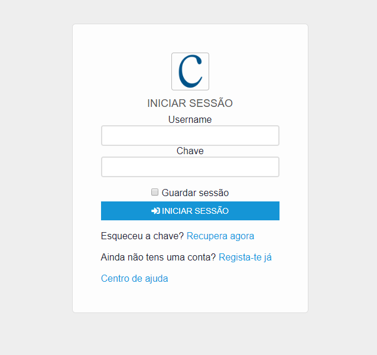

Projectos desenvolvidos

Cinkhub
O cinkhub é uma plataforma web que serve para partilha de ideias de negócios. Desenvolvi o projecto com o objectivo de melhorar as minhas habilidades na programação orientada a objectos com PHP e também técnicas de segurança já que possui possui cadastro, login e validação de contas.
Ver projecto.